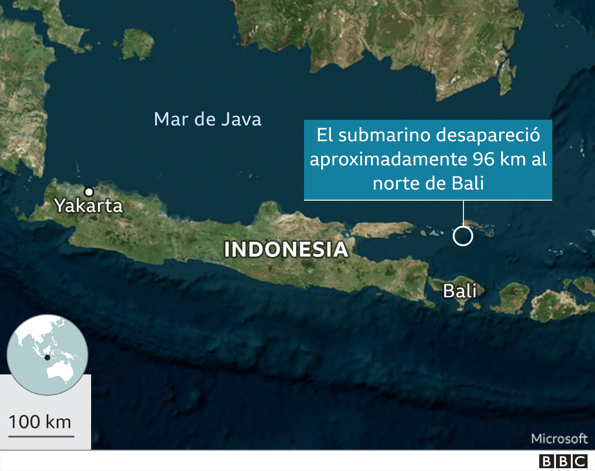

La desesperada búsqueda de un submarino con 53 tripulantes a los que les quedan pocas horas de oxígeno
La Armada de Indonesia está en una carrera por encontrar el KRI Nanggala-402, aquí en una foto de archivo.
En Indonesia trabajan contra reloj para rescatar a 53 tripulantes de un submarino de la fuerza naval desaparecido, mientras crecen los temores de que se les haya acabado el oxígeno.
Al KRI Nanggala-402 se le perdió el rastro cuando estaba a unos 100 km de la costa de Bali, en las primeras horas de la mañana del miércoles.
La búsqueda de la embarcación involucra seis barcos de guerra, un helicóptero y 400 personas.
Australia, India, Singapur y Malasia han enviado ayuda, y un avión militar de Estados Unidos aterrizó en Bali en la madrugada del sábado.
Un portavoz militar dijo que el suministro de oxígeno en el submarino se acabaría sobre las 03:00 hora local del sábado (21:00 GMT del viernes), una hora que ya ha pasado.